DO NOT BORDER YOURSELF THE BRIGHT ONE, THERE ARE SO MANY REASON YOU NEED TO STUDY SCULPTURE.
Introduction to Sculpture
Sculpture is the art of creating three-dimensional objects and forms through carving, modeling, casting, assembly, and other techniques. Unlike painting or drawing which exist on flat surfaces, sculpture occupies real space and invites viewers to walk around it, view it from multiple angles, and experience it through the interplay of form, material, and light. Sculptors work with stone, wood, metal, clay, plaster, and increasingly with modern materials like plastic, resin, and found objects to create permanent or temporary artworks that communicate meaning through form and material.
The practice of sculpture requires understanding of materials, their properties, and their limitations. Each material—marble, bronze, wood, clay—offers different possibilities for expression and requires different techniques for execution. Sculptors must also understand human perception and spatial relationships, considering how their work will be experienced from various viewpoints and distances. The scale of sculpture affects its impact dramatically: an intimate handheld work creates a different experience than a monumental public sculpture towering above viewers.
Sculpture serves multiple functions across cultures and time periods. Sacred sculptures in temples and churches serve spiritual and devotional purposes. Public monuments commemorate events, people, and values. Decorative sculpture adorns buildings and gardens. Contemporary sculpture challenges aesthetic expectations and explores conceptual ideas about form, space, and meaning. Throughout history, sculptural styles have reflected the religious beliefs, political systems, technological capabilities, and philosophical ideas of their time.
The study of sculpture encompasses understanding historical movements, recognizing how artists have responded to their material constraints, and appreciating the physical labor and conceptual sophistication required to create lasting three-dimensional forms.
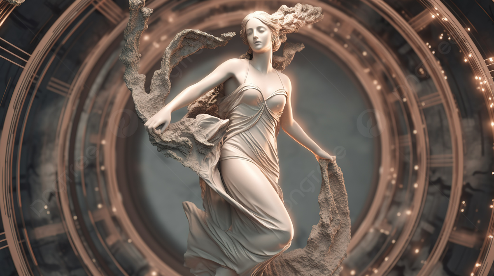
Historical Background of Sculpture
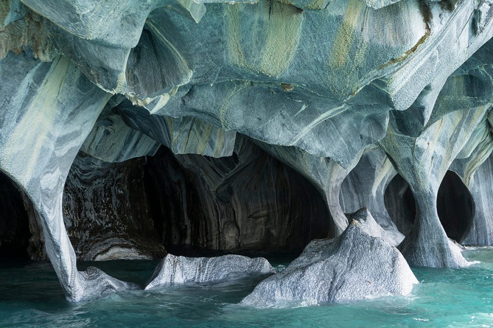
Ancient Civilizations
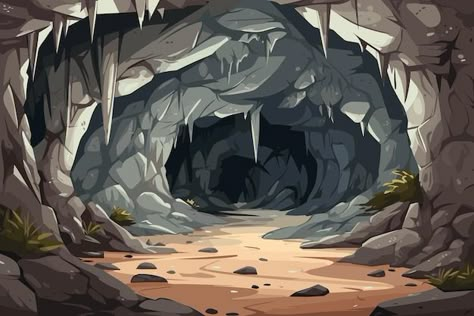
Egyptian Sculpture
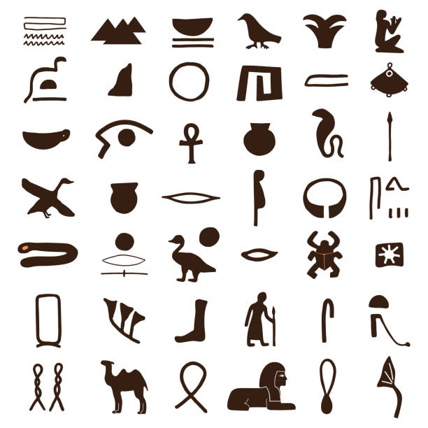
Greek Sculpture
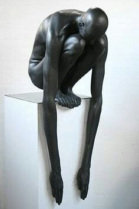
Roman Sculpture
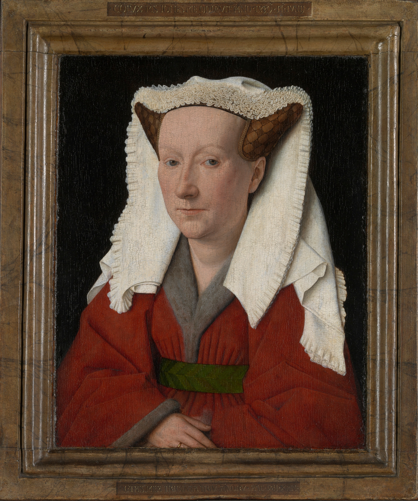
Medieval Sculpture
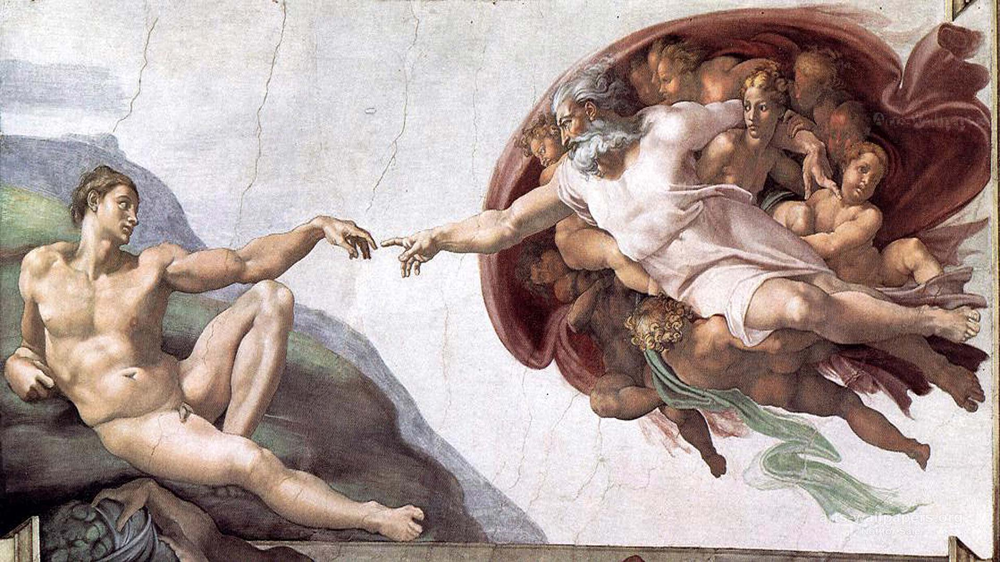
Renaissance Sculpture
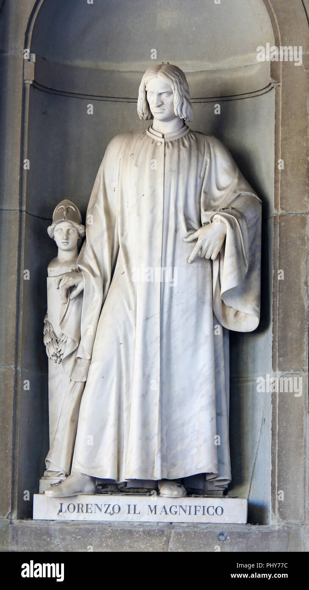
Baroque to Modern Sculpture
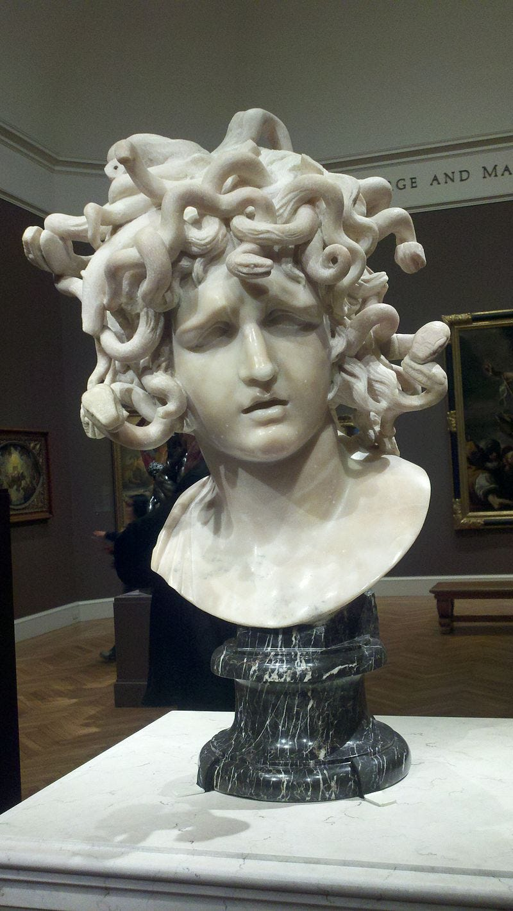
Contemporary Sculpture
Contemporary sculpture encompasses an extraordinary diversity of approaches, materials, and purposes. Artists work with traditional materials like stone, bronze, and wood alongside industrial materials, recycled materials, and ephemeral materials. Sculpture has expanded to encompass installation art, environmental intervention, video, performance, and digital forms. Artists create works engaging with identity, politics, ecology, technology, and spiritual practice. Public sculpture has become increasingly diverse, with temporary installations challenging traditional monumentality.
Contemporary sculptors frequently engage social and political issues through their practice. Artists create works addressing colonialism, environmental destruction, gender inequality, and other pressing concerns. Community-engaged sculpture involves collaborative creation with non-artists. Some contemporary sculptors work entirely with found materials and recycled objects, creating works that critique consumption and environmental destruction. Others engage new technologies including 3D printing, laser cutting, and digital fabrication, expanding possibilities for sculptural form.
The traditional art historical narrative emphasizing Western sculpture has been challenged by increased recognition of non-Western sculptural traditions. African sculpture, Asian sculpture, and indigenous sculptural practices offer alternative models of sculptural practice not confined to Western assumptions about representation and idealized human beauty. Contemporary sculpture increasingly draws on global traditions and cross-cultural collaboration. The concept of sculpture itself has expanded to include actions, processes, and concepts rather than just permanent physical objects.
Contemporary sculptors also engage with exhibitions, public spaces, and digital platforms in sophisticated ways. Sculpture increasingly appears in non-traditional contexts including websites, social media, and virtual reality environments. Performance art incorporates sculptural elements and temporary installations. Digital fabrication allows unprecedented precision while simultaneously enabling rapid experimentation and modification. Despite these innovations, fundamental sculptural concerns—how three-dimensional form engages space, how material expresses meaning, how viewers experience artworks—remain relevant even as contemporary practice radically redefines what sculpture can be.
Types of Sculpture
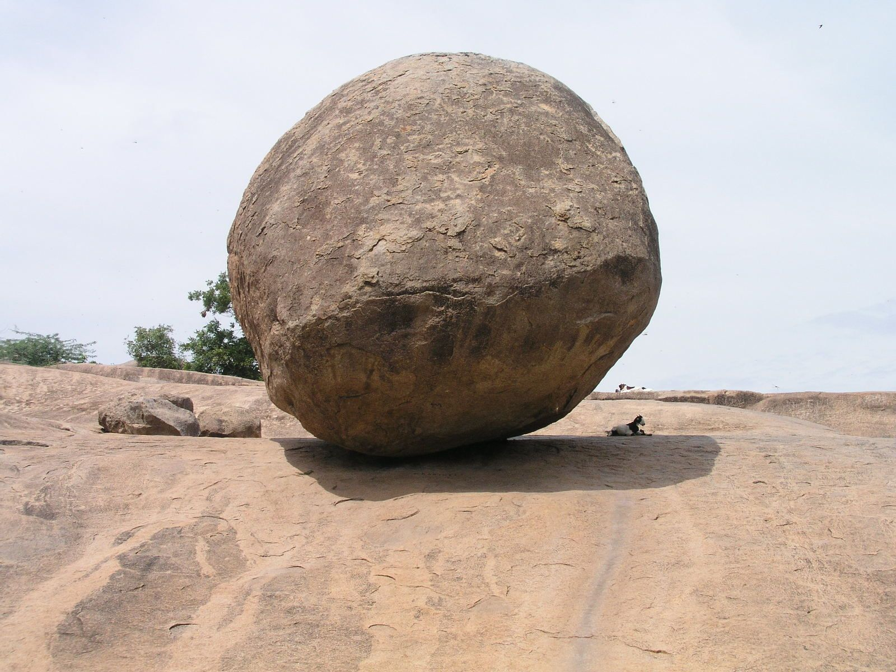
Relief Sculpture

Relief sculpture depicts forms projecting from a background plane rather than existing as independent three-dimensional objects. Relief sculpture includes low relief (bas-relief) with minimal projection from the background, high relief with substantial projection, and sunken relief where forms are cut into the background. Relief sculpture served decorative and narrative functions throughout history, adorning architecture and creating visual narratives on temple and tomb walls. Relief sculpture requires consideration of the viewing angle, as it is typically seen from a single frontal direction unlike free-standing sculpture.
Egyptian temple walls featured extensive relief sculpture narrating royal power and religious narratives. Greek and Roman sculptors created elaborate reliefs depicting military victories, civic ceremonies, and mythological scenes. Medieval cathedrals featured architectural reliefs creating elaborate sculptural programs. Renaissance sculptors like Donatello pioneered relief composition exploring perspective and compositional innovation. Italian Renaissance decorative reliefs on buildings, furniture, and decorative objects created patterns and narrative scenes. Relief sculpture remains popular in contemporary practice, with artists creating abstract compositional explorations and social commentary through relief forms.
Relief sculpture offers particular advantages for architectural integration and narrative clarity. The fixed viewing angle allows sculptors to orchestrate composition to guide viewer attention. Relief sculpture adapts well to architectural surfaces and public monuments. The relationship between background and projected forms creates complex spatial play distinguishing relief from other sculptural types. Relief sculpture techniques remain relevant for both traditional carving and contemporary digital fabrication methods.
Free-Standing Sculpture (In-the-Round)
Free-standing sculpture exists as an independent three-dimensional object meant to be viewed from multiple angles. Unlike relief sculpture which addresses a single frontal plane, free-standing sculpture requires sculptors to consider composition from all directions. Free-standing sculpture engages the surrounding space, with the void around the work being as important as the solid form. Viewers physically move around free-standing sculpture experiencing changing views and relationships with the work's spatial environment.
Ancient sculptors created monumental free-standing figures of pharaohs and gods establishing permanent markers in sacred spaces. Greek sculptors pioneered the free-standing nude male figure developing naturalistic proportions and contrapposto pose. Renaissance sculptors like Michelangelo and Donatello created iconic free-standing sculptures including the David and bronze horseman. Nineteenth-century public monuments featured free-standing figures commemorating historical figures and events. Modernist sculptors increasingly explored how free-standing forms engage surrounding space.
Free-standing sculpture offers limitless compositional possibilities reflecting the sculptor's three-dimensional vision. Works can be viewed intimately from close range or experienced from distance in landscapes. Free-standing sculpture creates psychological relationships with viewers through scale, proportion, and spatial positioning. The ability to walk around free-standing sculpture creates temporal experiences where the work reveals itself gradually as the viewer moves. Contemporary sculptors continue exploring free-standing forms ranging from traditional representational figures to abstract geometric compositions and biomorphic shapes.
Kinetic Sculpture

Kinetic sculpture incorporates actual movement, whether powered by motors, wind, water, or viewer interaction. Kinetic sculpture emerged as a sculptural category in the twentieth century with artists like Alexander Calder pioneering mobile sculpture suspended to move in air currents. Kinetic sculpture represents a fundamental break from traditional sculpture's static permanence, introducing time and change as essential sculptural elements. The movement transforms the viewing experience constantly, making the work different each moment as the composition shifts.
Kinetic sculpture encompasses diverse approaches including motorized mechanisms, wind-powered forms, water-driven sculptures, and gravity-driven systems. Artists create elaborate mechanical sculptures exploring the beauty of movement, balance, and transformation. Some kinetic sculptures respond to viewer presence through proximity sensors or movement detectors. Others incorporate sound, creating multimedia experiences. Kinetic sculpture frequently explores the physics of balance, motion, and energy transformation. Contemporary kinetic sculptors use programmable systems and computer control creating complex choreographed movements.
Kinetic sculpture introduces practical engineering challenges alongside aesthetic considerations. Sculptors must understand mechanics, physics, and materials to create works that function reliably while expressing artistic vision. The moving sculpture requires maintenance and occasionally generates wear on materials and moving parts. Despite these challenges, kinetic sculpture offers unique expressive possibilities unavailable in static forms. The temporal dimension and continuous transformation create philosophical dimensions exploring change, impermanence, and process central to contemporary art practice.
Installation Art
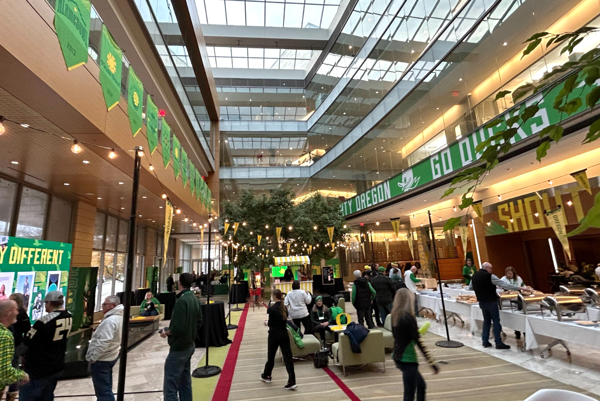
Abstract Sculpture
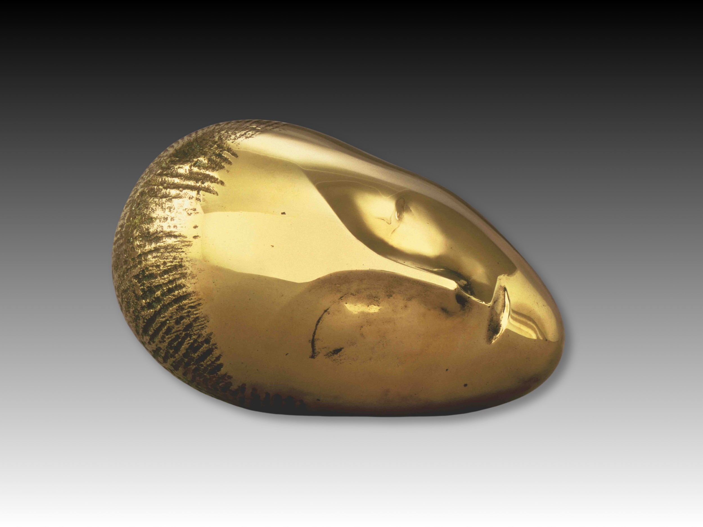
Materials and Techniques
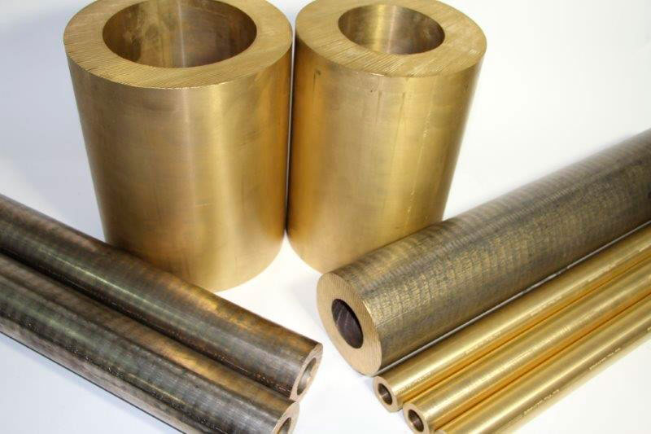

Sculpture transforms materials into spatial experiences, inviting viewers to engage the fundamental relationships between form, space, and human perception.
The actual three-dimensionality of sculpture
The actual three-dimensionality of sculpture in the round limits its scope in certain respects in comparison with the scope of painting. Sculpture cannot conjure the illusion of space by purely optical means or invest its forms with atmosphere and light as painting can. It does have a kind of reality, a vivid physical presence that is denied to the pictorial arts. The forms of sculpture are tangible as well as visible, and they can appeal strongly and directly to both tactile and visual sensibilities. Even the visually impaired, including those who are congenitally blind, can produce and appreciate certain kinds of sculpture. It was, in fact, argued by the 20th-century art critic Sir Herbert Read that sculpture should be regarded as primarily an art of touch and that the roots of sculptural sensibility can be traced to the pleasure one experiences in fondling things.
.

All three-dimensional forms are perceived as having an expressive character as well as purely geometric properties. They strike the observer as delicate, aggressive, flowing, taut, relaxed, dynamic, soft, and so on. By exploiting the expressive qualities of form, a sculptor is able to create images in which subject matter and expressiveness of form are mutually reinforcing. Such images go beyond the mere presentation of fact and communicate a wide range of subtle and powerful feelings.
The aesthetic raw material of sculpture is, so to speak, the whole realm of expressive three-dimensional form. A sculpture may draw upon what already exists in the endless variety of natural and man-made form, or it may be an art of pure invention. It has been used to express a vast range of human emotions and feelings from the most tender and delicate to the most violent and ecstatic.
All human beings, intimately involved from birth with the world of three-dimensional form, learn something of its structural and expressive properties and develop emotional responses to them. This combination of understanding and sensitive response, often called a sense of form, can be cultivated and refined. It is to this sense of form that the art of sculpture primarily appeals.
Elements of design
The amount of importance attached to either mass or space in the design of sculpture varies considerably. In Egyptian sculpture and in most of the sculpture of the 20th-century artist Constantin Brancusi, for example, mass is paramount, and most of the sculptor’s thought was devoted to shaping a lump of solid material. In 20th-century works by Antoine Pevsner or Naum Gabo, on the other hand, mass is reduced to a minimum, consisting only of transparent sheets of plastic or thin metal rods. The solid form of the components themselves is of little importance; their main function is to create movement through space and to enclose space. In works by such 20th-century sculptors as Henry Moore and Barbara Hepworth, the elements of space and mass are treated as more or less equal partners.

It is not possible to see the whole of a fully three-dimensional form at once. The observer can only see the whole of it if he turns it around or goes around it himself. For this reason it is sometimes mistakenly assumed that sculpture must be designed primarily to present a series of satisfactory projective views and that this multiplicity of views constitutes the main difference between sculpture and the pictorial arts, which present only one view of their subject. Such an attitude toward sculpture ignores the fact that it is possible to apprehend solid forms as volumes, to conceive an idea of them in the round from any one aspect. A great deal of sculpture is designed to be apprehended primarily as volume.
A single volume is the fundamental unit of three-dimensional solid form that can be conceived in the round. Some sculptures consist of only one volume, others are configurations of a number of volumes. The human figure is often treated by sculptors as a configuration of volumes, each of which corresponds to a major part of the body, such as the head, neck, thorax, and thigh.

The surfaces of sculpture are in fact all that one actually sees. It is from their inflections that one makes inferences about the internal structure of the sculpture. A surface has, so to speak, two aspects: it contains and defines the internal structure of the masses of the sculpture, and it is the part of the sculpture that enters into relations with external space.
The expressive character of different kinds of surfaces is of the utmost importance in sculpture. Double-curved convex surfaces suggest fullness, containment, enclosure, the outward pressure of internal forces. In the aesthetics of Indian sculpture such surfaces have a special metaphysical significance. Representing the encroachment of space into the mass of the sculpture, concave surfaces suggest the action of external forces and are often indicative of collapse or erosion. Flat surfaces tend to convey a feeling of material hardness and rigidity; they are unbending or unyielding, unaffected by either internal or external pressures. Surfaces that are convex in one curvature and concave in the other can suggest the operation of internal pressures and at the same time a receptivity to the influence of external forces. They are associated with growth, with expansion into space.
Unlike the painter, who creates light effects within the work, the sculptor manipulates actual light on the work. The distribution of light and shade over the forms of his or her work depends upon the direction and intensity of light from external sources. Nevertheless, to some extent he or she can determine the kinds of effect this external light will have. If the artist knows where the work is to be sited, he or she can adapt it to the kind of light it is likely to receive. The brilliant overhead sunlight of Egypt and India demands a different treatment from the dim interior light of a northern medieval cathedral. Then again, it is possible to create effects of light and shade, or chiaroscuro, by cutting or modeling deep, shadow-catching hollows and prominent, highlighted ridges. Many late Gothic sculptors used light and shade as a powerful expressive feature of their work, aiming at a mysterious obscurity, with forms broken by shadow emerging from a dark background. Greek, Indian, and most Italian Renaissance sculptors shaped the forms of their work to receive light in a way that makes the whole work radiantly clear.
The colouring of sculpture may be either natural or applied. In the recent past, sculptors became more aware than ever before of the inherent beauty of sculptural materials. Under the slogan of “truth to materials” many of them worked their materials in ways that exploited their natural properties, including colour and texture. More recently, however, there has been a growing tendency to use bright artificial colouring as an important element in the design of sculpture.
In the ancient world and during the Middle Ages almost all sculpture was artificially coloured, usually in a bold and decorative rather than a naturalistic manner. The sculptured portal of a cathedral, for example, would be coloured and gilded with all the brilliance of a contemporary illuminated manuscript. Combinations of differently coloured materials, such as the ivory and gold of some Greek sculpture, were not unknown before the 17th century; but the early Baroque sculptor Gian Lorenzo Bernini greatly extended the practice by combining variously coloured marbles with white marble and gilt bronze.

Principles of design
It is doubtful whether any principles of design are universal in the art of sculpture, for the principles that govern the organization of the elements of sculpture into expressive compositions differ from style to style. In fact, distinctions made among the major styles of sculpture are largely based on a recognition of differences in the principles of design that underlie them. Thus, the art historian Erwin Panofsky was attempting to define a difference of principle in the design of Romanesque and Gothic sculpture when he stated that the forms of Romanesque were conceived as projections from a plane outside themselves, while those of Gothic were conceived as being centred on an axis within themselves. The “principle of axiality” was considered by Panofsky to be “the essential principle of classical statuary,” which Gothic had rediscovered.
The principles of sculptural design govern the approaches of sculptors to such fundamental matters as orientation, proportion, scale, articulation, and balance.
For conceiving and describing the orientation of the forms of sculpture in relation to each other, to a spectator, and to their surroundings, some kind of spatial scheme of reference is required. This is provided by a system of axes and planes of reference.
An axis
An axis is an imaginary centre line through a symmetrical or near symmetrical volume or group of volumes that suggests the gravitational pivot of the mass. Thus, all the main components of the human body have axes of their own, while an upright figure has a single vertical axis running through its entire length. Volumes may rotate or tilt on their axes.
Planes of reference are imaginary planes to which the movements, positions, and directions of volumes, axes, and surfaces may be referred. The principal planes of reference are the frontal, the horizontal, and the two profile planes.

The principles that govern the characteristic poses and spatial compositions of upright figures in different styles of sculpture are formulated with reference to axes and the four cardinal planes: for example, the principle of axiality already referred to; the principle of frontality, which governs the design of Archaic sculpture; the characteristic contrapposto (pose in which parts of the body, such as upper and lower, tilt or even twist in opposite directions) of Michelangelo’s figures; and in standing Greek sculpture of the Classical period the frequently used balanced “chiastic” pose (stance in which the body weight is taken principally on one leg, thereby creating a contrast of tension and relaxation between the opposite sides of a figure).
Proportional relations exist among linear dimensions, areas, and volumes and masses. All three types of proportion coexist and interact in sculpture, contributing to its expressiveness and beauty. Attitudes toward proportion differ considerably among sculptors. Some sculptors, both abstract and figurative, use mathematical systems of proportion; for example, the refinement and idealization of natural human proportions was a major preoccupation of Greek sculptors. Indian sculptors employed iconometric canons, or systems of carefully related proportions, that determined the proportions of all significant dimensions of the human figure. African and other sculptors base the proportions of their figures on the subjective importance of the parts of the body. Unnatural proportions may be used for expressive purposes or to accommodate a sculpture to its surroundings. The elongation of the figures on the Portail Royal (“Royal Portal”) of Chartres cathedral does both: it enhances their otherworldliness and also integrates them with the columnar architecture.
Sometimes it is necessary to adapt the proportions of sculpture to suit its position in relation to a viewer. A figure sited high on a building, for example, is usually made larger in its upper parts in order to counteract the effects of foreshortening. This should be allowed for when a sculpture intended for such a position is exhibited on eye level in a museum.

The scale of sculpture must sometimes be considered in relation to the scale of its surroundings. When it is one element in a larger complex, such as the facade of a building, it must be in scale with the rest. Another important consideration that sculptors must take into account when designing outdoor sculpture is the tendency of sculpture in the open air—particularly when viewed against the sky—to appear less massive than it does in a studio. Because one tends to relate the scale of sculpture to one’s own human physical dimensions, the emotional impact of a colossal figure and a small figurine are quite different.
victory stele of Naram-Sin
In ancient and medieval sculpture the relative scale of the figures in a composition is often determined by their importance; e.g., enslaved persons are much smaller than kings or nobles. This is sometimes known as hierarchic scale.

The joining of one form to another may be accomplished in a variety of ways. In much of the work of the 19th-century French sculptor Auguste Rodin, there are no clear boundaries, and one form is merged with another in an impressionistic manner to create a continuously flowing surface. In works by the Greek sculptor Praxiteles, the forms are softly and subtly blended by means of smooth, blurred transitions. The volumes of Indian sculpture and the surface anatomy of male figures in the style of the Greek sculptor Polyclitus are sharply defined and clearly articulated. One of the main distinctions between the work of Italian and northern Renaissance sculptors lies in the Italians’ preference for compositions made up of clearly articulated, distinct units of form and the tendency of the northern Europeans to subordinate the individual parts to the allover flow of the composition.

Relationships to other arts
Sculpture has long been closely related to architecture through its role as architectural decoration and also at the level of design. Architecture, like sculpture, is concerned with three-dimensional form; and, although the central problem in the design of buildings is the organization of space rather than mass, there are styles of architecture that are effective largely through the quality and organization of their solid forms. Ancient styles of stone architecture, particularly Egyptian, Greek, and Mexican, tend to treat their components in a sculptural manner. Moreover, most buildings viewed from the outside are compositions of masses. The growth of spatial sculpture is so intimately related to the opening up and lightening of architecture, which the development of modern building technology has made possible, that many 20th-century sculptors can be said to have treated their work in an architectural manner.

Relationships to other arts
Sculpture has long been closely related to architecture through its role as architectural decoration and also at the level of design. Architecture, like sculpture, is concerned with three-dimensional form; and, although the central problem in the design of buildings is the organization of space rather than mass, there are styles of architecture that are effective largely through the quality and organization of their solid forms. Ancient styles of stone architecture, particularly Egyptian, Greek, and Mexican, tend to treat their components in a sculptural manner. Moreover, most buildings viewed from the outside are compositions of masses. The growth of spatial sculpture is so intimately related to the opening up and lightening of architecture, which the development of modern building technology has made possible, that many 20th-century sculptors can be said to have treated their work in an architectural manner.
Materials
Any material that can be shaped in three dimensions can be used sculpturally. Certain materials, by virtue of their structural and aesthetic properties and their availability, have proved especially suitable. The most important of these are stone, wood, metal, clay, ivory, and plaster. There are also a number of materials that have only recently come into use.
Primary materials
Stones
Throughout history, stone has been the principal material of monumental sculpture. There are practical reasons for this: many types of stone are highly resistant to the weather and therefore suitable for external use; stone is available in all parts of the world and can be obtained in large blocks; many stones have a fairly homogeneous texture and a uniform hardness that make them suitable for carving; stone has been the chief material used for the monumental architecture with which so much sculpture has been associated.
Stones belonging to all three main categories of rock formation have been used in sculpture. Igneous rocks, which are formed by the cooling of molten masses of mineral as they approach the Earth’s surface, include granite, diorite, basalt, and obsidian. These are some of the hardest stones used for sculpture. Sedimentary rocks, which include sandstones and limestones, are formed from accumulated deposits of mineral and organic substances. Sandstones are agglomerations of particles of eroded stone held together by a cementing substance. Limestones are formed chiefly from the calcareous remains of organisms. Alabaster (gypsum), also a sedimentary rock, is a chemical deposit. Many varieties of sandstone and limestone, which vary greatly in quality and suitability for carving, are used for sculpture. Because of their method of formation, many sedimentary rocks have pronounced strata and are rich in fossils.

Metamorphic rocks result from changes brought about in the structure of sedimentary and igneous rocks by extreme pressure or heat. The most well-known metamorphic rocks used in sculpture are the marbles, which are recrystallized limestones. Italian Carrara marble, the best known, was used by Roman and Renaissance sculptors, especially Michelangelo, and is still widely used. The best-known varieties used by Greek sculptors, with whom marble was more popular than any other stone, are Pentelic—from which the Parthenon and its sculpture are made—and Parian.

Because stone is extremely heavy and lacks tensile strength, it is easily fractured if carved too thinly and not properly supported. A massive treatment without vulnerable projections, as in Egyptian and pre-Columbian American Indian sculpture, is therefore usually preferred. Some stones, however, can be treated more freely and openly; marble in particular has been treated by some European sculptors with almost the same freedom as bronze, but such displays of virtuosity are achieved by overcoming rather than submitting to the properties of the material itself.
The colours and textures of stone are among its most delightful properties. Some stones are fine-grained and can be carved with delicate detail and finished with a high polish; others are coarse-grained and demand a broader treatment. Pure white Carrara marble, which has a translucent quality, seems to glow and responds to light in a delicate, subtle manner. (These properties of marble were brilliantly exploited by 15th-century Italian sculptors such as Donatello and Desiderio da Settignano.) The colouring of granite is not uniform but has a salt-and-pepper quality and may glint with mica and quartz crystals. It may be predominantly black or white or a variety of grays, pinks, and reds. Sandstones vary in texture and are often warmly coloured in a range of buffs, pinks, and reds. Limestones vary greatly in colour, and the presence of fossils may add to the interest of their surfaces. A number of stones are richly variegated in colour by the irregular veining that runs through them
Hardstones, or semiprecious stones, constitute a special group, which includes some of the most beautiful of all substances. The working of these stones, along with the working of more precious gemstones, is usually considered as part of the glyptic (gem carving or engraving), or lapidary, arts, but many artifacts produced from them can be considered small-scale sculpture. They are often harder to work than steel. First among the hardstones used for sculpture is jade, which was venerated by the ancient Chinese, who worked it, together with other hardstones, with extreme skill. It was also used sculpturally by Maya and Mexican artists. Other important hardstones are rock crystal, rose quartz, amethyst, agate, and jasper.

Woods
The principal material of sculpture in Africa, Oceania, and North America, wood has also been used by every great civilization; it was used extensively during the Middle Ages, for example, especially in Germany and central Europe. Among modern sculptors who have used wood for important works are Ernst Barlach, Ossip Zadkine, and Henry Moore.
Both hardwoods and softwoods are used for sculpture. Some are close-grained, and they cut like cheese; others are open-grained and stringy. The fibrous structure of wood gives it considerable tensile strength, so that it may be carved thinly and with greater freedom than stone. For large or complex open compositions, a number of pieces of wood may be jointed. Wood is used mainly for indoor sculpture, for it is not as tough or durable as stone; changes of humidity and temperature may cause it to split, and it is subject to attack by insects and fungus. The grain of wood is one of its most attractive features, giving variety of pattern and texture to its surfaces. Its colours, too, are subtle and varied. In general, wood has a warmth that stone does not have, but it lacks the massive dignity and weight of stone.

The principal woods for sculpture are oak, mahogany, limewood, walnut, elm, pine, cedar, boxwood, pear, and ebony; but many others are also used. The sizes of wood available are limited by the sizes of trees; North American Indians, for example, could carve gigantic totem poles in pine, but boxwood is available only in small pieces.
In the 20th century, wood was used by many sculptors as a medium for construction as well as for carving. Laminated timbers, chipboards, and timber in block and plank form can be glued, jointed, screwed, or bolted together, and given a variety of finishes.
Metals
Wherever metal technologies have been developed, metals have been used for sculpture. The amount of metal sculpture that has survived from the ancient world does not properly reflect the extent to which it was used, for vast quantities have been plundered and melted down. Countless ancient metal sculptures have been lost in this way, as has almost all the goldwork of pre-Columbian American Indians.
The metal most used for sculpture is bronze, which is basically an alloy of copper and tin; but gold, silver, aluminum, copper, brass, lead, and iron have also been widely used. Most metals are extremely strong, hard, and durable, with a tensile strength that permits a much greater freedom of design than is possible in either stone or wood. A life-size bronze figure that is firmly attached to a base needs no support other than its own feet and may even be poised on one foot. Considerable attenuation of form is also possible without risk of fracture.

The colour, brilliant lustre, and reflectivity of metal surfaces have been highly valued and made full use of in sculpture although, since the Renaissance, artificial patinas have generally been preferred as finishes for bronze.
Metals can be worked in a variety of ways in order to produce sculpture. They can be cast—that is, melted and poured into molds; squeezed under pressure into dies, as in coin making; or worked directly—for example, by hammering, bending, cutting, welding, and repoussé (hammered or pressed in relief).
Important traditions of bronze sculpture are Greek, Roman, Indian (especially Chola), African (Bini and Yoruba), Italian Renaissance, and Chinese. Gold was used to great effect for small-scale works in pre-Columbian America and medieval Europe. A fairly recent discovery, aluminum has been used a great deal by modern sculptors. Iron has not been used much as a casting material, but in recent years it has become a popular material for direct working by techniques similar to those of the blacksmith. Sheet metal is one of the principal materials used nowadays for constructional sculpture. Stainless steel in sheet form has been used effectively by the American sculptor David Smith.

Clay
Clay is one of the most common and easily obtainable of all materials. Used for modeling animal and human figures long before men discovered how to fire pots, it has been one of the sculptor’s chief materials ever since.
Clay has four properties that account for its widespread use: when moist, it is one of the most plastic of all substances, easily modeled and capable of registering the most detailed impressions; when partially dried out to a leather-hard state or completely dried, it can be carved and scraped; when mixed with enough water, it becomes a creamy liquid known as slip, which may be poured into molds and allowed to dry; when fired to temperatures of between 700 and 1,400 °C (1,300 and 2,600 °F), it undergoes irreversible structural changes that make it permanently hard and extremely durable.
 Sculptors use clay as a material for working out ideas; for preliminary models that are subsequently cast in such materials as plaster, metal, and concrete or carved in stone; and for pottery sculpture.
Sculptors use clay as a material for working out ideas; for preliminary models that are subsequently cast in such materials as plaster, metal, and concrete or carved in stone; and for pottery sculpture.
Depending on the nature of the clay body itself and the temperature at which it is fired, a finished pottery product is said to be earthenware, which is opaque, relatively soft, and porous; stoneware, which is hard, nonporous, and more or less vitrified; or porcelain, which is fine-textured, vitrified, and translucent. All three types of pottery are used for sculpture. Sculpture made in low-fired clays, particularly buff and red clays, is known as terra-cotta (baked earth). This term is used inconsistently, however, and is often extended to cover all forms of pottery sculpture.
Unglazed clay bodies can be smooth or coarse in texture and may be coloured white, gray, buff, brown, pink, or red. Pottery sculpture can be decorated with any of the techniques invented by potters and coated with a variety of beautiful glazes.

Paleolithic sculptors produced relief and in-the-round work in unfired clay. The ancient Chinese, particularly during the Tang (618–907 ce) and Song (960–1279 ce) dynasties, made superb pottery sculpture, including large-scale human figures. The best-known Greek works are the intimate small-scale figures and groups from Tanagra. Mexican and Maya sculptor-potters produced vigorous, directly modeled figures. During the Renaissance, pottery was used in Italy for major sculptural projects, including the large-scale glazed and coloured sculptures of Luca della Robbia and his family, which are among the finest works in the medium. One of the most popular uses of the pottery medium has been for the manufacture of figurines—at Staffordshire, Meissen, and Sèvres, for example.

The main source of ivory is elephant tusks; but walrus, hippopotamus, narwhal (an Arctic aquatic animal), and, in Paleolithic times, mammoth tusks also were used for sculpture. Ivory is dense, hard, and difficult to work. Its colour is creamy white, which usually yellows with age; and it will take a high polish. A tusk may be sawed into panels for relief carving or into blocks for carving in the round; or the shape of the tusk itself may be used. The physical properties of the material invite the most delicate, detailed carving, and displays of virtuosity are common.
Ivory was used extensively in antiquity in the Middle and Far East and the Mediterranean. An almost unbroken Christian tradition of ivory carving reaches from Rome and Byzantium to the end of the Middle Ages. Throughout this time, ivory was used mainly in relief, often in conjunction with precious metals, enamels, and precious stones to produce the most splendid effects. Some of its main sculptural uses were for devotional diptychs, portable altars, book covers, retables (raised shelves above altars), caskets, and crucifixes. The Baroque period, too, is rich in ivories, especially in Germany. A fine tradition of ivory carving also existed in Benin, a former kingdom of West Africa.

Related to ivory, horn and bone have been used since Paleolithic times for small-scale sculpture. Caribou horn and walrus tusks were two of the Inupiaq and Inuit carver’s most important materials. One of the finest of all medieval “ivories” is a carving in whalebone, The Adoration of the Magi.

Plaster of paris (sulfate of lime) is especially useful for the production of molds, casts, and preliminary models. It was used by Egyptian and Greek sculptors as a casting medium and is today the most versatile material in the sculptor’s workshop.
When mixed with water, plaster will in a short time recrystallize, or set—that is, become hard and inert—and its volume will increase slightly. When set, it is relatively fragile and lacking in character and is therefore of limited use for finished work. Plaster can be poured as a liquid, modeled directly when of a suitable consistency, or easily carved after it has set. Other materials can be added to it to slacken its setting, to increase its hardness or resistance to heat, to change its colour, or to reinforce it.
The main sculptural use of plaster in the past was for molding and casting clay models as a stage in the production of cast metal sculpture. Many sculptors today omit the clay-modeling stage and model directly in plaster. As a mold material in the casting of concrete and fibreglass sculpture, plaster is widely used. It has great value as a material for reproducing existing sculpture; many museums, for example, use such casts for study purposes.
Caving
Whatever material is used, the essential features of the direct method of carving are the same; the sculptor starts with a solid mass of material and reduces it systematically to the desired form. After he or she has blocked out the main masses and planes that define the outer limits of the forms, he or she works progressively over the whole sculpture, first carving the larger containing forms and planes and then the smaller ones until eventually the surface details are reached. Then the artist gives the surface whatever finish is required. Even with a preliminary model as a guide, the sculptor’s concept constantly evolves and clarifies as the work proceeds; thus, as he or she adapts the design to the nature of the carving process and the material, the work develops as an organic whole.

The process of direct carving imposes a characteristic order on the forms of sculpture. The faces of the original block, slab, or cylinder of material can usually still be sensed, existing around the finished work as a kind of implied spatial envelope limiting the extension of the forms in space and connecting their highest points across space. In a similar way, throughout the whole carving, smaller forms and planes can be seen as contained within implied larger ones. Thus, an ordered sequence of containing forms and planes, from the largest to the smallest, gives unity to the work.
Indirect carving
All of the great sculptural traditions of the past used the direct method of carving, but in Western civilization during the 19th and early 20th centuries it became customary for stone and, to a lesser extent, wood sculpture to be produced by the indirect method. This required the production of a finished clay model that was subsequently cast in plaster and then reproduced in stone or wood in a more or less mechanical way by means of a pointing machine. Usually the carving was not done by the sculptor him- or herself. At its worst, this procedure results in a carved copy of a design that was conceived in terms of clay modeling. Although indirect carving does not achieve aesthetic qualities that are typical of carved sculpture, it does not necessarily result in bad sculpture. Rodin’s marble sculptures, for example, are generally considered great works of art even by those who object to the indirect methods by which they were produced. The indirect method has been steadily losing ground since the revival of direct carving in the early 20th century and such innovations as 3D printing at the end of that century.

Carving tools and techniques
The tools used for carving differ with the material to be carved. Stone is carved mostly with steel tools that resemble cold chisels. To knock off the corners and angles of a block, a tool called a pitcher is driven into the surface with a heavy iron hammer. The pitcher is a thick, chisel-like tool with a wide beveled edge that breaks rather than cuts the stone. The heavy point then does the main roughing out, followed by the fine point, which may be used to within a short distance of the final surface. These pointed tools are hammered into the surface at an angle that causes the stone to break off in chips of varying sizes. Claw chisels, which have toothed edges, may then be worked in all directions over the surface, removing the stone in granule form and thus refining the surface forms. Flat chisels are used for finishing the surface carving and for cutting sharp detail. There are many other special tools, including stone gouges, drills, toothed hammers (known as bushhammers or bouchardes), and, often used today, power-driven pneumatic tools, for pounding away the surface of the stone. The surface can be polished with a variety of processes and materials.

Because medieval carvers worked mostly in softer stones and made great use of flat chisels, their work tends to have an edgy, cut quality and to be freely and deeply carved. In contrast is the work done in hard stones by people who lacked metal tools hard enough to cut the stone. Egyptian granite sculpture, for example, was produced mainly by abrasion; that is, by pounding the surface and rubbing it down with abrasive materials. The result is a compact sculpture, not deeply hollowed out, with softened edges and flowing surfaces. It usually has a high degree of tactile appeal.
Although the process of carving is fundamentally the same for wood or stone, the physical structure of wood demands tools of a different type. For the first blocking out of a wood carving a sculptor may use saws and axes, but his or her principal tools are a wide range of wood-carver’s gouges. The sharp, curved edge of a gouge cuts easily through the bundles of fibre and when used properly will not split the wood. Flat chisels are also used, especially for carving sharp details. Wood rasps, or coarse files, and sandpaper can be used to give the surface a smooth finish, or, if preferred, it can be left with a faceted, chiseled appearance. Wood-carving tools have hardwood handles and are struck with round, wooden mallets. African wood sculptors use a variety of adzes rather than gouges and mallets. Ivory is carved with an assortment of saws, knives, rasps, files, chisels, drills, and scrapers.
Modeling
In contrast to the reductive process of carving, modeling is essentially a building-up process in which the sculpture grows organically from the inside. Numerous plastic materials are used for modeling. The main ones are clay, plaster, and wax; but concrete, synthetic resins, plastic wood, stucco, and even molten metal can also be modeled. A design modeled in plastic materials may be intended for reproduction by casting in more permanent and rigid materials, such as metal, plaster, concrete, and fibreglass, or it may itself be made rigid and more permanent through the self-setting properties of its materials (for example, plaster) or by firing.
Modeling for casting
The material most widely used for making positive models for casting is clay. A small, compact design or a low relief can be modeled solidly in clay without any internal support; but a large clay model must be formed over a strong armature made of wood and metal. Since the armature may be very elaborate and can only be altered slightly, if at all, once work has started, the modeler must have a fairly clear idea from his or her drawings and maquettes of the arrangement of the main shapes of the finished model. The underlying main masses of the sculpture are built up firmly over the armature, and then the smaller forms, surface modeling, and details are modeled over them. The modeler’s chief tools are his or her fingers, but for fine work he or she may use a variety of wooden modeling tools to apply the clay and wire loop tools to cut it away. Reliefs are modeled on a vertical or nearly vertical board. The clay is keyed, or secured, onto the board with galvanized nails or wood laths. The amount of armature required depends on the height of the relief and the weight of clay involved.

To make a cast in metal, a foundry requires from the sculptor a model made of a rigid material, usually plaster. The sculptor can produce this either by modeling in clay and then casting in plaster from the clay model or by modeling directly in plaster. For direct plaster modeling, a strong armature is required because the material is brittle. The main forms may be built up roughly over the armature in expanded wire and then covered in plaster-soaked scrim (a loosely woven sacking). This provides a hollow base for the final modeling, which is done by applying plaster with metal spatulas and by scraping and cutting down with rasps and chisels.
Fibreglass and concrete sculptures are cast in plaster molds taken from the sculptor’s original model. The model is usually clay rather than plaster because if the forms of the sculpture are at all complex it is easier to remove a plaster mold from a soft clay model than from a model in a rigid material, such as plaster.
A great deal of the metal sculpture of the past, including Nigerian, Indian, and many Renaissance bronzes, was produced by the direct lost-wax process, which involves a special modeling technique. The design is first modeled in some refractory material to within a fraction of an inch of the final surface, and then the final modeling is done in a layer of wax, using the fingers and also metal tools, which can be heated to make the wax more pliable. Medallions are often produced from wax originals, but because of their small size they can be solid-cast and therefore do not require a core.
Direct metal sculpture
The introduction of the oxyacetylene welding torch as a sculptor’s tool revolutionized metal sculpture in the 20th century. A combination of welding and forging techniques was pioneered by the Spanish sculptor Julio González around 1930; and during the 1940s and 1950s it became a major sculptural technique, particularly in Britain and in the United States, where its greatest exponent was David Smith. In the 1960s and early 1970s, more sophisticated electric welding processes were replacing flame welding.

Welding equipment can be used for joining and cutting metal. A welded joint is made by melting and fusing together the surfaces of two pieces of metal, usually with the addition of a small quantity of the same metal as a filler. The metal most widely used for welded sculpture is mild steel, but other metals can be welded. In a brazed joint, the parent metals are not actually fused together but are joined by an alloy that melts at a lower temperature than the parent metals. Brazing is particularly useful for making joints between different kinds of metal, which cannot be done by welding, and for joining nonferrous metals. Forging is the direct shaping of metal by bending, hammering, and cutting.

Direct metalworking techniques have opened up whole new ranges of form to the sculptor—open skeletal structures, linear and highly extended forms, and complex, curved sheet forms. Constructed metal sculpture may be precise and clean, as that of Minimalist sculptors Donald Judd and Phillip King, or it may exploit the textural effects of molten metal in a free, “romantic” manner, as in the work of Lee Bontecou.
Surface-finishing techniques
Casting and molding processes are used in sculpture either for making copies of existing sculpture or as essential stages in the production of a finished work. Numerous materials are used for making molds and casts, and some of the methods are complex and highly skilled. Only a broad outline of the principal methods can be given here.
Molding and casting
These are used for producing a single cast from a soft, plastic original, usually clay. They are especially useful for producing master casts for subsequent reproduction in metal. The basic procedure is as follows. First, the mold is built up in liquid plaster over the original clay model; for casting reliefs, a one-piece mold may be sufficient, but for sculpture in the round a mold in at least two sections is required. Second, when the plaster is set, the mold is divided and removed from the clay model. Third, the mold is cleaned, reassembled, and filled with a self-setting material such as plaster, concrete, or fibreglass-reinforced resin. Fourth, the mold is carefully chipped away from the cast. This involves the destruction of the mold—hence the term “waste” mold. The order of reassembling and filling the mold may be reversed; fibreglass and resin, for example, are “laid up” in the mold pieces before they are reassembled.
Plaster piece molds are used for producing more than one cast from a soft or rigid original and are especially good for reproducing existing sculpture and for slip casting. Before the invention of flexible molds, piece molds were used for producing wax casts for metal casting by the lost-wax process. A piece mold is built up in sections that can be withdrawn from the original model without damaging it. The number of sections depends on the complexity of the form and on the amount of undercutting; tens, or even hundreds, of pieces may be required for really large, complex works. The mold sections are carefully keyed together and supported by a plaster case. When the mold has been filled, it can be removed section by section from the cast and used again. Piece molding is a highly skilled and laborious process.

Made of such materials as gelatin, vinyl, and rubber, flexible molds are used for producing more than one cast; they offer a much simpler alternative to piece molding when the original model is a rigid one with complex forms and undercuts. The material is melted and poured around the original positive in sections, if necessary. Being flexible, the mold easily pulls away from a rigid surface without causing damage. While it is being filled (with wax, plaster, concrete, and fibreglass-reinforced resins), the mold must be surrounded by a plaster case to prevent distortion.
The lost-wax process is the traditional method of casting metal sculpture. It requires a positive, which consists of a core made of a refractory material and an outer layer of wax. The positive can be produced either by direct modeling in wax over a prepared core, in which case the process is known as direct lost-wax casting, or by casting in a piece mold or flexible mold taken from a master cast. The wax positive is invested with a mold made of refractory materials and is then heated to a temperature that will drive off all moisture and melt out all the wax, leaving a narrow cavity between the core and the investment. Molten metal is then poured into this cavity. When the metal has cooled down and solidified, the investment is broken away, and the core is removed from inside the cast. The process is, of course, much more complex than this simple outline suggests. Care has to be taken to suspend the core within the mold by means of metal pins, and a structure of channels must be made in the mold that will enable the metal to reach all parts of the cavity and permit the mold gases to escape. A considerable amount of filing and chasing of the cast is usually required after casting is completed.

While the lost-wax process is used for producing complex, refined metal castings, sand molding is more suitable for simpler types of form and for sculpture in which a certain roughness of surface does not matter. Recent improvements in the quality of sand castings and the invention of the “lost-pattern” process have resulted in a much wider use of sand casting as a means of producing sculpture. A sand mold, made of special sand held together by a binder, is built up around a rigid positive, usually in a number of sections held together in metal boxes. For a hollow casting, a core is required that will fit inside the negative mold, leaving a narrow cavity as in the lost-wax process. The molten metal is poured into this cavity.
The lost-pattern process is used for the production by sand molding of single casts in metal. After a positive made of expanded polystyrene is firmly embedded in casting sand, molten metal is poured into the mold straight onto the expanded foam original. The heat of the metal causes the foam to pass off into vapour and disappear, leaving a negative mold to be filled by the metal. Channels for the metal to run in and for the gases to escape are made in the mold, as in the lost-wax process. The method is used mainly for producing solid castings in aluminum that can be welded or riveted together to make the finished sculpture.
Slip casting is primarily a potter’s technique that can be used for repetition casting of small pottery sculptures. Liquid clay, or slip, is poured into a plaster piece mold. Some of the water in the slip is absorbed by the plaster and a layer of stiffened clay collects on the surface of the mold. When this layer is thick enough to form a cast, the excess slip is poured off and the mold is removed. The hollow clay cast is then dried and fired.

Surface finishing
Surface finishes for sculpture can be either natural—bringing the material of the sculpture itself to a finish—or applied. Almost all applied surface finishes preserve as well as decorate.

Many sculptural materials have a natural beauty of colour and texture that can be brought out by smoothing and polishing. Stone carvings are smoothed by rubbing down with a graded series of coarse and fine abrasives, such as carborundum, sandstone, emery, pumice, and whiting, all used while the stone is wet. Some stones, such as marble and granite, will take a high gloss; others are too coarse-grained to be polished and can only be smoothed to a granular finish. Wax is sometimes used to give stone a final polish.

The natural beauty of wood is brought out by sandpapering or scraping and then waxing or oiling. Beeswax and linseed oil are the traditional materials, but a wide range of waxes and oils is currently available.

Ivory is polished with gentle abrasives such as pumice and whiting, applied with a damp cloth.
Concrete can be rubbed down, like stone, with water and abrasives, which both smooth the surface and expose the aggregate. Some concretes can be polished.
Metals are rubbed down manually with steel wool and emery paper and polished with various metal polishes. A high-gloss polish can be given to metals by means of power-driven buffing wheels used in conjunction with abrasives and polishes. Clear lacquers are applied to preserve the polish.
Painting
Stone, wood, terra-cotta, metal, fibreglass, and plaster can all be painted in a reasonably durable manner provided that the surfaces are properly prepared and suitable primings and paints are used. In the past, stone and wood carvings were often finished with a coating of gesso (plaster of paris or gypsum prepared with glue) that served both as a final modeling material for delicate surface detail and as a priming for painting. Historically, the painting and gilding of sculpture were usually left to specialists. In Greek relief sculpture, actual details of the composition were often omitted at the carving stage and left for the painter to insert. In the 15th century, the great Flemish painter Rogier van der Weyden undertook the painting of sculpture as part of his work.

Modern paint technology has made an enormous range of materials available. Constructed sculptures are often finished with mechanical grinders and sanders and then sprayed with high-quality cellulose paints.
Gilding
The surfaces of wood, stone, and plaster sculpture can be decorated with gold, silver, and other metals that are applied in leaf or powder form over a suitable priming. Metals, especially bronze, were often fire-gilded; that is, treated with an amalgam of gold and mercury that was heated to drive off the mercury. The panels of the Gates of Paradise in Florence, by the 15th-century sculptor Lorenzo Ghiberti, are a well-known example of gilded bronze.

Patination
Patinas on metals are caused by the corrosive action of chemicals. Sculpture that is exposed to different kinds of atmosphere or buried in soil or immersed in seawater for some time acquires a patina that can be extremely attractive. Similar effects can be achieved artificially by applying various chemicals to the metal surface, which is often heated to create a bond. This is a particularly effective treatment for bronze, which can be given a wide variety of attractive green, brown, blue, and black patinas. Iron is sometimes allowed to rust until it acquires a satisfactory colour, and then the process is arrested by lacquering.

Electroplating
The surfaces of metal sculpture or of specially prepared nonmetal sculpture can be coated with such metals as chrome, silver, gold, copper, and nickel by the familiar industrial process of electroplating. The related technique of anodizing can be used to prevent the corrosion of aluminum sculpture and to dye its surface.